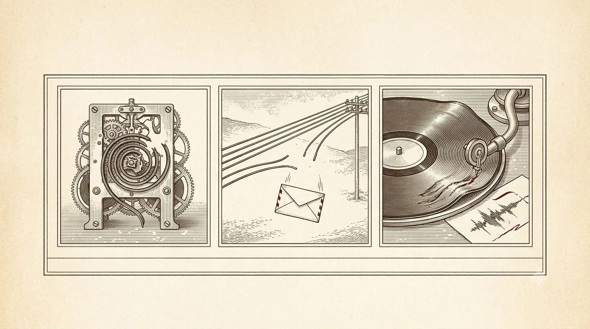

Chapter 01 · Foundations
The Failure Model
Before we can make a workflow survive anything, we must agree on what "anything" is.
I have spent a working life on one problem: how to make a computation that keeps a promise even though the machine running it is allowed to die. It sounds grand, but it begins somewhere very humble — with an honest list of the ways the world lets us down. You cannot defend against a threat you have not named, and most unreliable software is unreliable because someone quietly assumed a failure could not happen. So let us name them first, plainly, and then everything else in this book will read as a series of specific answers to specific dangers.
There are, for our purposes, three enemies. The machine can stop — lose power, panic, get killed by the scheduler, fall off the network mid sentence. The wire can be cut — a message you sent may never arrive, may arrive twice, may arrive late and out of order, and worst of all, you often cannot tell which. And the disk can lie — a write you thought reached stable storage may have been sitting in a volatile cache when the lights went out, so the bytes you read back are not the bytes you wrote. Three enemies: the machine stops, the wire is cut, the disk lies.

An elegant engraved triptych in classic printed-book style on warm aged paper (cream and sepia with a single restrained oxblood-red accent). Three small vignettes, each in a thin ruled frame: (1) a clockwork machine frozen mid-motion with a snapped mainspring — the machine stops; (2) a telegraph wire cut clean through, ends drifting apart, a message envelope falling — the wire is cut; (3) a warped phonograph-style disk returning a smudged, wrong reading — the disk lies. Fine cross-hatch engraving, scholarly, no readable text baked in. ~1280×720px, 16:9 landscape, centred with safe margins.
Generate this with your image agent, then drop the file here.
We assume fail-stop with crash-recovery: a process runs correctly until it halts, and some time later it comes back and must pick up the pieces. We assume an asynchronous, unreliable network: messages can be lost, duplicated, delayed, and reordered. We assume stable storage exists — a disk that, once it truly acknowledges a write, will return it after a crash — but that reaching it is the expensive, deliberate act we must be careful about. That is the whole threat model. Everything follows.
The crash is not the interesting part
Here is the thing that took our field an embarrassingly long time to internalise. A crash, by itself, is easy. The machine stops; there is nothing running to be wrong. The hard part is the moment before the crash, and the moment after. Before: you were halfway through something — you had debited the account but not yet credited the other, you had charged the card but not yet recorded that you did. After: you restart, and you must answer an awful question with no one to ask — did that step happen or not?
Back in 1985 I went and counted, at Tandem, why production systems actually fell over. The popular belief was hardware. It was not. The great majority of outages traced to software faults and to operations — a botched procedure, a bad configuration, a change rolled out wrong. That finding reshaped how I think about reliability. You do not achieve it by building a machine that never fails; you cannot. You achieve it by building a system that fails cleanly and recovers, so that the inevitable stumble costs you a few seconds of resumption rather than a corrupt ledger and a long, unhappy evening.
Ask a banker how they survive a fire in the counting-house and they will not describe a fireproof building. They will show you the ledger — the bound, ordered, written record from which the day's position can be reconstructed even if every coin on the table is scattered. The whole of this book is really the software version of that instinct: write down what you did, in order, somewhere that survives the fire, and you can always rebuild the rest.
What "durable" actually means
The word durable gets thrown around, so let us pin it to something you can test. An effect is durable if it survives a crash that happens the instant after you were told it succeeded. That is a strong claim, and it has a sharp consequence: you may not report success until the record of it has reached stable storage. Not the cache in front of the disk — the disk. This ordering, dull as it looks, is the hinge the entire subject turns on, and in the next chapter it gets a name: write-ahead logging.
Notice, too, what durable is not. It is not the same as available. Availability is staying up; durability is coming back with your committed work intact. A system can be highly available and lose your data on a crash, and it can be exquisitely durable while being down for an hour. Durable execution — the subject of this book — is the pursuit of the second property for whole programs, not just their data: we want the program's progress to be as crash-proof as a committed bank transaction.
Because the wire can be cut at the worst possible moment, you often cannot know whether your last request took effect. You sent "charge the card"; you never heard back. Did it charge? You genuinely cannot tell from here. This is not a bug you can fix — it is a property of unreliable messaging, as old as the two-generals problem. The entire craft is arranging things so that not knowing is safe: so you can simply ask again, and asking again does no harm. Hold that thought — it becomes Chapter 04.
The shape of the rest of the book
Every remaining chapter is a reply to this model. We build the log (Ch 2) to defeat the crash — a durable, ordered record of what happened. We replay it (Ch 3) to rebuild a program's state after death. We make steps idempotent (Ch 4) so the cut wire's duplicate requests are harmless. We give the program durable timers (Ch 5) so even the passage of time survives a restart. We use sagas (Ch 6) for the failures we cannot hide and must instead unwind. Then we look at how real engines (Ch 7) assemble these parts, and end with an honest ledger (Ch 8) of what all this machinery does and does not promise.
A modern disk fsync costs on the order of 1–10 ms; an in-memory
write costs tens of nanoseconds. That is a factor of roughly a million. Every reliability
decision in this book is, at bottom, a decision about when you are willing to pay that
millionfold toll — and the answer is always "before I tell anyone it's done."
Think it through
- Take a piece of code you own that makes an external call — a charge, an email, a webhook. Mark the exact line where a crash would leave you unable to answer "did it happen?" That line is why this book exists.
- For that same call, decide: if you retried it blindly, what would go wrong? If the answer is "nothing," you already have an idempotent operation. If it is "a double charge," you have found Chapter 04's homework.
- List one failure your current system silently assumes away. Now imagine it happening at 2 a.m. That is the failure to design for first.